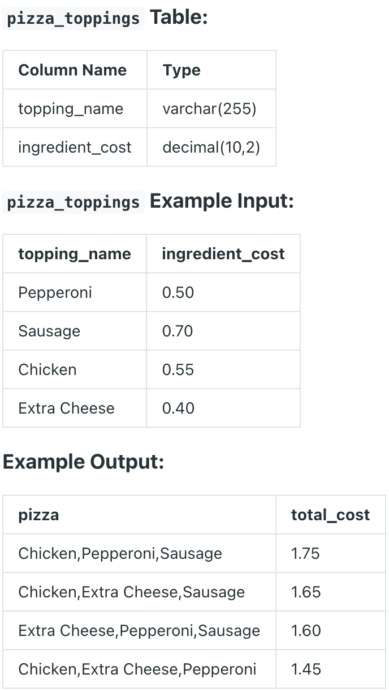

Question sourced from DataLemur.com.
Database: PostgreSQL
You’re a consultant for a major pizza chain that will be running a promotion where all 3-topping pizzas will be sold for a fixed price, and are trying to understand the costs involved.
Given a list of pizza toppings, consider all the possible 3-topping pizzas, and print out the total cost of those 3 toppings. Sort the results with the highest total cost on the top followed by pizza toppings in ascending order.
Break ties by listing the ingredients in alphabetical order, starting from the first ingredient, followed by the second and third.

/*
My strategy: Use a cross join to create a result table of all possible
row combinations from three instances of the pizza_toppings table.
Keep only the rows of this result table where all three toppings are
different. (Comparison operators, e.g. < and >, can be used to prevent
duplicate toppings, and to order the toppings based on collation
rules / alphabetical order.) Derive a column for the concatenated
string name of the 3-topping pizza, and another column for the total
cost of the pizza.
*/
SELECT CONCAT(p1.topping_name, ',', p2.topping_name, ',', p3.topping_name) AS pizza,
(p1.ingredient_cost + p2.ingredient_cost + p3.ingredient_cost) AS total_cost
FROM pizza_toppings p1
CROSS JOIN pizza_toppings p2, pizza_toppings p3
WHERE p1.topping_name < p2.topping_name
AND p2.topping_name < p3.topping_name
ORDER BY total_cost DESC, pizza;